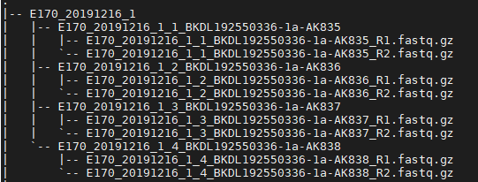

单细胞测序比对流程
Contents
单细胞测序比对流程#
[toc]
0.测试数据一般的文件格式#
关于文库：
一个样本就是一个文库。对于每个样本（文库），我们使用一组index序列来标志。
关于 index：
Index的概念，直接翻译的话应该理解为索引，标志。简单来讲就是为了识别测序得到的数据属于哪个样本。
为什么一个样本需要一组index序列而不用一种index序列？如果一个lane中，index序列都是一样，那么会影响碱基的测序质量。高通量测序过程中，每次测序，每个独立的Lane中需要保持一定Index的复杂度。尤其对于Illumina和华大的MGI平台，这一要求是必须的。因为这2个平台的测序技术在识别碱基时都是使用的拍照技术，如果Index复杂度不够，可能出现在一个照片视野下，同一颜色的荧光的颜色点密度太高而导致碱基识别质量大大降低，严重影响数据拆分的效率。所以，在上机测序前，需要统计下全部Index每个位置上的碱基占比，尽量保障每个位置上每种碱基的占比为25%。
我们可观察下面的例子中，一个样本下有4个文件组成。那么这个样本是由4个index序列进行标志。4个文件也被称为子文库。换句话说用了4个不同的index，进行标志了样本（文库），测序完之后产生了4个文件都是这个样本的。

根据上面的fastq文件路径格式设置相应的批量脚本
1. 批量在自己目录下创建软连接#
create_ln.sh#
#!/bin/sh
rootdir=$1
result=$2
for sample in `dir $rootdir`
do
for index in `dir $rootdir/$sample`
do
output=${result}/${sample}/${index}
mkdir -p $output
for fq in `dir $rootdir/$sample/$index`
do
if [[ $fq =~ "fq.gz" ]]
then
ln -s $rootdir/$sample/$index/$fq $output
echo "Create the soft connection to ${output}"
fi
done
done
done
用法sh create_ln.sh 原始文件目录 目标目录
sh create_ln.sh /public/jiazi/zhufeng/office/fastq/PM-XS01KF2019120513-18/ANNO_XS01KF2019120513_PM-XS01KF2019120513-18_2020-09-30/Rawdata /public/home/hjfeng_gibh/Projects/CCLA/zhufeng/zhufeng_20201125_firstling/Rawdata_ln
2.批量进行fastqc质控#
batch_fastqc.sh#
rootdir=$1
output=$2
mkdir -p $output
for sample in `dir ${rootdir}`
do
for index in `dir ${rootdir}/${sample}`
do
for fq in `dir ${rootdir}/${sample}/${index}`
do
if [[ $fq =~ 'R1.fq.gz' ]]
then
fqr1=${rootdir}/${sample}/${index}/${fq}
elif [[ $fq =~ 'R2.fq.gz' ]]
then
fqr2=${rootdir}/${sample}/${index}/${fq}
fi
done
qsub -N fastqc.${index} -v index=$index,output=$output,fqr1=$fqr1,fqr2=$fqr2 fastqc.sh
done
done
fastqc.sh#
#PBS -l walltime=1336:00:00
#PBS -l nodes=1:ppn=4
#PBS -j oe
#PBS -q cv3
#PBS -o ${index}.log
#PBS -V
fastqc=/public/software/genomics/approved/FastQC-0.11.2/fastqc
$fastqc --extract \
-t 8 \
-f fastq \
-o ${output} \
$fqr1 $fqr2
用法sh batch_fastqc.sh 原始文件目录 目标文件目录
log文件会在脚本所在的目录下创建的，所以建议不同功能的脚本，独立开目录
sh batch_fastqc.sh /public/home/hjfeng_gibh/Projects/CCLA/zhufeng/zhufeng_20201125_firstling/Rawdata_ln /public/home/hjfeng_gibh/Projects/CCLA/zhufeng/zhufeng_20201125_firstling/fastqc_result
3. 批量进行fastp质控，产生Cleandata#
batch_fastp.sh#
rootdir=$1
result=$2
outdir=${result}/Cleandata
report=${result}/Report
log=${result}/log
mkdir -p $outdir
mkdir -p $report
mkdir -p $log
for sample in `dir ${rootdir}`
do
for index in `dir ${rootdir}/${sample}`
do
for fq in `dir ${rootdir}/${sample}/${index}`
do
if [[ $fq =~ 'R1.fq.gz' ]]
then
fqr1=${rootdir}/${sample}/${index}/${fq}
fqr1_name=`basename $fqr1 | sed 's/_R1.fq.gz/_R1.fastq.gz/'`
elif [[ $fq =~ 'R2.fq.gz' ]]
then
fqr2=${rootdir}/${sample}/${index}/${fq}
fqr2_name=`basename $fqr2 | sed 's/_R2.fq.gz/_R2.fastq.gz/'`
fi
done
qsub -N fastp.${sample}/${index} -v fqr1=$fqr1,fqr2=$fqr2,fqr1_name=$fqr1_name,fqr2_name=$fqr2_name,sample=$sample,index=$index,outdir=$outdir,report=$report,log=$log fastp.sh
done
done
fastp.sh#
#PBS -l walltime=1336:00:00
#PBS -l nodes=1:ppn=2
#PBS -j oe
#PBS -q cv3
#PBS -o fastp.${index}.log
#PBS -V
fastp=/public/software/anaconda352/envs/py27/bin/fastp
cd $PBS_O_WORKDIR
output=${outdir}/${sample}/${index}
mkdir -p $output
$fastp --thread 2 \
--length_required 28 \
--disable_quality_filtering \
--detect_adapter_for_pe \
--report_title "'${index}'" \
--json ${report}/${index}.json \
--html ${report}/${index}.html \
-i ${fqr1} \
-I ${fqr2} \
-o ${output}/${fqr1_name} \
-O ${output}/${fqr2_name}
用法sh batch_fastp.sh 原始文件 目标文件
sh batch_fastp.sh /public/home/hjfeng_gibh/Projects/CCLA/zhufeng/zhufeng_20201125_firstling/Rawdata_ln /public/home/hjfeng_gibh/Projects/CCLA/zhufeng/zhufeng_20201125_firstling/fastp_result
这个脚本会在…/fastp_result下生成三个文件夹，查看报告结果（Report），质控过后的数据（Cleandata）
4. 批量进行序列比对#
batch_starsolo.sh#
#!/bin/sh
dataset=$1
for sample in `dir $dataset`
do
i=0
R1=$()
R2=$()
for sub_sample in `dir $dataset/$sample`
do
sub_folder=$dataset/${sample}/${sub_sample}
for f in ${sub_folder}/*gz
do
root=`basename $f`
if [[ $root == *R1.* ]]
then
R1[$i]=$f
else
R2[$i]=$f
fi
done
i=$[$i+1]
done
R1=$( IFS='|'; echo "${R1[*]}" )
R2=$( IFS='|'; echo "${R2[*]}" )
echo STARsolo $sample
qsub -N STARsolo.${sample} -v sample=$sample,R1=$R1,R2=$R2 run_STARsolo.sh
done
run_STARsolo.sh#
#PBS -l walltime=1336:00:00
#PBS -l nodes=1:ppn=10,mem=60gb
#PBS -j oe
#PBS -q cv3
#PBS -o ${sample}.log
#PBS -V
cd $PBS_O_WORKDIR
id=`basename ${sample}`
id=${id}
R1=`echo $R1 | sed 's/|/,/g'`
R2=`echo $R2 | sed 's/|/,/g'`
output=./$id/outs
mkdir -p $output
star=/public/jiazi/software/STAR-2.7.6a/source/STAR
$star --soloType Droplet \
--soloFeatures Gene Velocyto\
--runThreadN 10 \
--soloCBstart 1 \
--soloCBlen 16 \
--soloUMIstart 17 \
--soloUMIlen 12 \
--soloBarcodeReadLength 0 \
--readFilesCommand zcat \
--outSAMtype BAM SortedByCoordinate \
--outSAMattributes NH HI AS nM CR CY UR UY \
--outFileNamePrefix $output/${id}_ \
--soloCBmatchWLtype Exact \
--soloUMIfiltering MultiGeneUMI \
--genomeDir /public/jiazi/lhlin/mapping/star/reference/hg38/star-2.7.6 \
--soloCBwhitelist /public/jiazi/lhlin/mapping/star/reference/whitelist/3M-february-2018.txt \
--readFilesIn ${R2} ${R1}
############################## MUST READ ####################################
# 10x kit v2: the soloUMIlen is 10, soloCBwhitelist is 737K-august-2016.txt #
# 10x kit v3, the soloUMIlen is 12, soloCBwhitelist is 3M-february-2018.txt #
用法 sh batch_starsolo 原始目录 目标目录这个脚本是在当前目录下生成比对结果的文件夹，所以要另开一个独立的目录
sh batch_starsolo.sh /public/home/hjfeng_gibh/Projects/CCLA/zhufeng/zhufeng_20201125_firstling/fastp_result/Cleandata